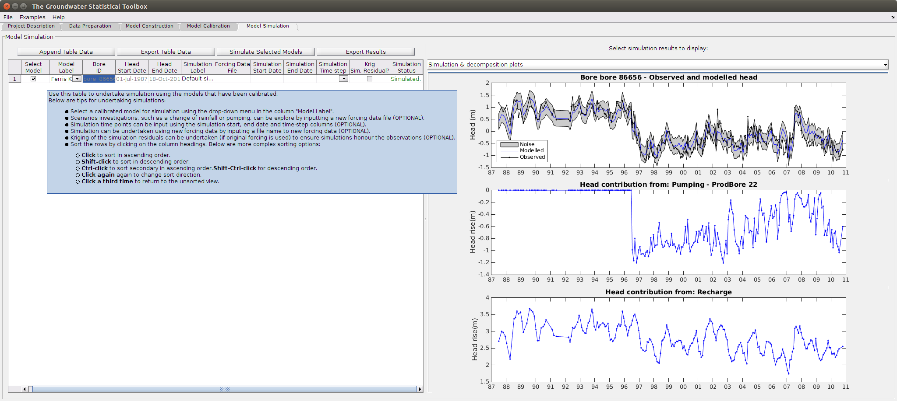

HydroSight - Model Simulation GUI Tab
Contents
Overview
The Model Simulation tab allows calibrated time-series models to be used for the following simulations:
- interpolation or extrapolation of the observed hydrograph to, say, a daily time-step.
- decomposition of the hydrograph to individual drivers.
- scenario investigations using different forcing data.
The screenshot below illustrates the main features of the tab. Specifically:
- The left-hand table shows the simulations that have been defined. An unlimited number of simulations can be undertaken for each model.
- Unique simulation setting can be defined for each simulation.
- The simulated water level and decomposition to drivers (if available from the chosen model type) can be plotted on the right-hand pane.

Getting Started
To simulate the water level using a calibrated time-series model, complete the following steps:
- Select the required model label from the drop-down menu in the Model Label column (second column).
- Input a label for the simulation in the column Simulation Label. This is a required input and must be unique for the model.
- Consider providing optional inputs, such as new forcing data, a fixed time step or kriging the residuals (observed head minus simulated head) to ensure the simulated head honours the observed head.
- Select the models to be simulated using the left tick boxes.
- Click on the button Simulate Selected Models to simulate the models. The progress is displayed in the column Simulation Status.
- Review the simulation results using the right-hand results pane.
Inputs
The following inputs are available for this tab. The bold inputs are required:
- Model Label : the calibrated model for simulation. The list of calibrated models is provided in a drop-down menu.
- Simulation Label : a unique label for the selected model label.
- Forcing Data File : the full file name of a .csv data file containing different forcing data to that used in the calibration. The new forcing data must have the same column headings as that used in the calibration but can cover different time periods and have different forcing values.
- Simulation Start Date : the start date for the simulation. The date must be within the time period of forcing data but can be different to that used in the calibration. This allows extrapolation of the groundwater hydrograph back in time. The default is the start date of observed hydrograph.
- Simulation End Date : the end date for the simulation. The date must be within the time period of forcing data but can be different to that used in the calibration. This allows extrapolation of the groundwater hydrograph forward in time. The default is the end date of observed hydrograph.
- Simulation Time Step : The time step for the simulation. The options are: daily, weekly, monthly, yearly. This input can be used independently of the above dates. By default simulations are undertaken only at the date of water level observations.
- Krig Simulation Residuals? : Kriging of the simulation residuals can be undertaken (if calibration forcing data is used) to ensure simulations honour the observations. This requires the time-step to be input. The analysis is undertaken by (i) calculating the experimental variogram of the residuals, (ii) fitting an exponential variogram to the experimental data, (iii) undertaking universal local kriging of the residuals and adding the result to the simulated water level, and (iv) scaling the time-series noise estimates by the normalised kriging variance.
Outputs
The following outputs are presented within the table:
- Simulation Status : the status of the model simulation is displayed within the table. Error messages for the simulation are also displayed.
In addition to the above table of outputs, detailed outputs can be shown in the right-hand pane. The available outputs are detailed below. To access these outputs, select the required output from the right-hand drop-down menu and then place the cursor in a cell for the required simulation.
- Simulation Data : data table of simulated water level and the decomposition to each driver (if available for the model type). The table can be selected and copied and pasted into, say, Excel.
- Simulation & Decomposition plots : plot of the simulated water level and plots for the contribution to the hydrograph from each driver (if available from the model type).